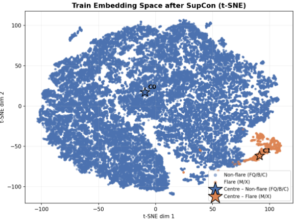
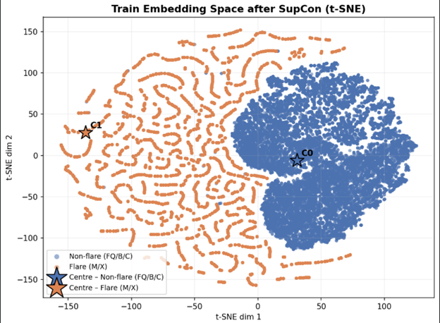
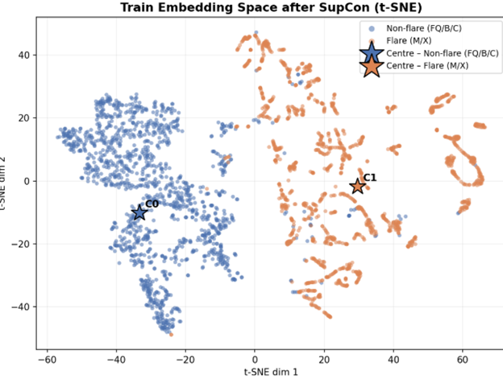
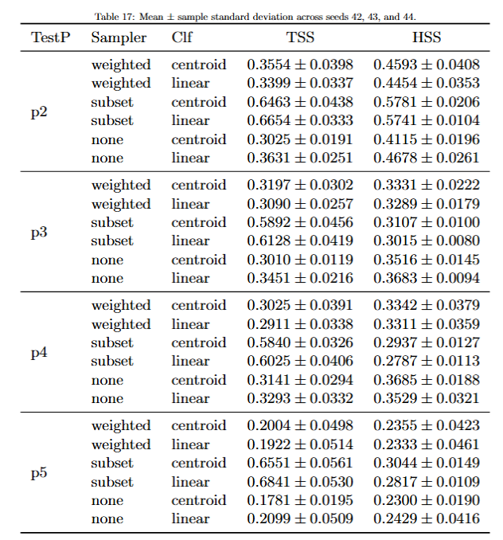

Weekly Updates
← Back to split index | Open original single-file view
Week 16 — May 7
Sampling Strategy Analysis with Contrastive Learning
Method and Observation
- I used supervised contrastive learning to form clusters of flare and non-flare under different sampling strategies.
- Visualization of embedding space using t-SNE for each case.
- Then computed centroid for each class.
- During inference, classification is done based on distance to centroids.
- Undersampling performs better compared to oversampling and no sampling.
- This trend is consistent across different partitions and setups.
Embedding Visualization



Results
